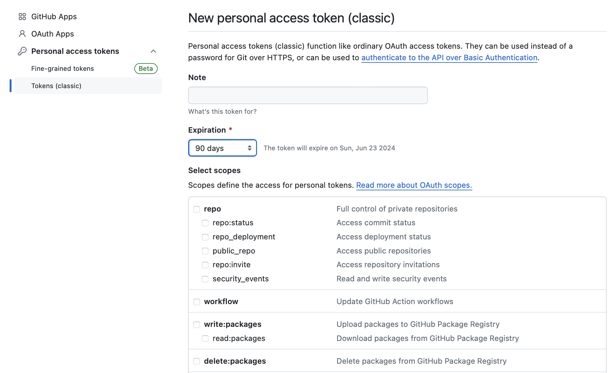
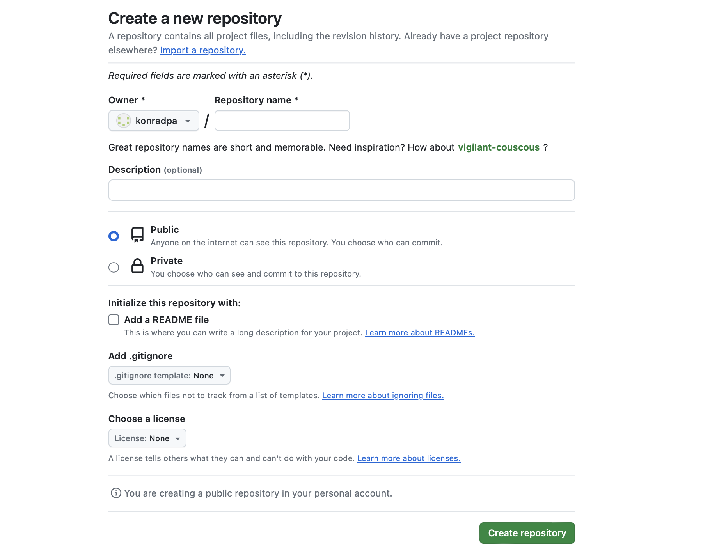

git remote add origin https://github.com/yourusername/repositoryname.git7 GitHub
Summary
This chapter will introduce you to remote repositories, in particular GitHub.
7.1 Logistics
7.1.1 Learning objectives
üí° Connecting Git and Github
üí° Setting up a GitHub repository
üí° Pulling and pushing changes to / from a Github repository
7.1.2 Exercises
7.1.2.1 Upload your repository to GitHub
- Create a new repository on GitHub.
- Set the remote URL to your GitHub repository.
- Push your changes to GitHub.
7.1.2.2 Clone your repository, push and pull
- Clone your uploaded repository to a different location on your computer.
- Make changes and push them to GitHub.
- Pull the changes into your original repository.
7.1.2.3 Bonus: Create a Pull Request
- Create a new branch in your local repository.
- Add, commit, and push changes in the new branch.
- Create and merge a pull request for this new branch on GitHub
7.2 What are remote repositories
A remote repository is a version of your Git repository that is hosted on a server, mostly on the internet. Unlike your local repository, which is on your personal computer, a remote repository can be a shared resource that allows multiple contributors to collaborate on a project. These remote repositories could be hosted on platforms like GitHub, GitLab, Bitbucket, or a private server.
7.2.1 Why use remote repositories?
One of the primary reasons to use remote repositories is for collaboration. They provide a centralized location where team members can collectively work on a project. Whether contributors are across the room or across the globe, remote repositories make it possible for everyone to access the same set of project files and contribute to the development process.
Hosting a project on a remote repository also serves as a backup mechanism. If a contributor’s computer fails or their files get corrupted, they can always clone a fresh copy of the project from the remote repository. This ensures that the project’s progress is not dependent on a single person’s local environment.
7.3 What is GitHub?
GitHub is a popular web-based platform that hosts Git repositories remotely. You can use it in your browser without installing any software on your computer. It’s a collaborative environment for software development, allowing developers to work together, manage code, and track changes. GitHub also offers project management and code review tools, making it great for open-source development and team collaboration.
7.4 Creating a GitHub account
To be able to use GitHub, you will need to create an account:
- Open https://github.com in your browser
- Click the
Sign upbutton - Enter the required personal details
- In step 2 select the free plan.
Choosing a Github Name
Here are some tips for choosing a GitHub username:
- Incorporate your name.
- Adapt your username from other platforms.
- Choose a professional username. Your future boss might look at your GitHub profile.
- Opt for a shorter username.
- Be unique and concise.
- Avoid references to specific institutions.
- Use all lowercase and hyphens for word separation.
GitHub student education pack
The GitHub Student Developer Pack is a program offered by GitHub to students, providing them with free access to a collection of valuable developer tools and services. To benefit from the pack, visit the GitHub Education website and sign up with your student email to verify your academic status. Once verified, you gain access to various resources, including GitHub Pro with unlimited private repositories, free domain names, cloud credits, coding courses, and more.
7.5 Connecting to GitHub
7.5.1 Authentication
GitHub authentication is needed to access and work with repositories that are stored on GitHub. It is kind of like showing your ID to prove who you are before entering a restricted area. It’s necessary to make sure only the right people or programs can access and do things on GitHub, keeping everything safe and organized.
For security reasons it is no longer possible to authenticate yourself using only your GitHub email and password. There are multiple authentication methods which offer different advantages and drawbacks. In this section, we will briefly introduce one of the two most common authentication methods: Personal Access Tokens.
If you would rather use the SSH protocol for authentication, check out the SSH documentation on Github.com.
7.5.1.1 Personal Access Token
Follow these steps to set it up:
Log in to your GitHub account on GitHub.com
Click on your profile picture in the top-right corner and select “Settings”.
In the left sidebar, select “Developer settings”, then “Personal access tokens (classic)”.
Click “Generate new token”.
Give your token a name. The name should help you to later identify in which context you used the token. For example, you could add a short description of the machine that you generated the token for.
Choose the desired scopes. The scopes define the permissions of the token, or “what it is allowed to do” with your GitHub account and repositories. For a normal usecase, you should enable the scopes: repo, admin:org and delete_repo for a full access.
Set an expiration date if needed. You can also choose “No expiration”.

Click “Generate token,” and you’ll be presented with your new token.
Make sure to copy it as it won’t be shown again. The first time you try to interact with a remote repository, you will get asked for a password. Paste this key as a password into the terminal to proceed.
If you use Git Bash on Windows, your terminal will open a window where you can choose to authenticate yourself with a PAT.
More about PAT settings
Expiration Date:
When you create a Personal Access Token, you can specify its expiration date. The expiration date is the date and time when the token becomes invalid and cannot be used for authentication anymore. Setting an expiration date is a security measure to limit the time during which the token can be misused if it falls into the wrong hands. Creating an expiration date for a GitHub Personal Access Token (PAT) is not strictly necessary, but it is considered a good security practice.
Scopes:
When you create a PAT, you can choose the scopes to define what actions the token is allowed to perform. These scopes determine the level of access the token has to different parts of your GitHub account or repositories.
Here are some common scopes you might encounter when creating a GitHub PAT:
repo: This scope provides full control of private and public repositories, including the ability to read, write, and delete code.
repo:status: Grants access to commit statuses, allowing the token to read and set commit status for a repository.
repo_deployment: Enables the token to access deployment-related events and perform actions related to repository deployments.
read:org: Allows the token to read organization membership, teams, and repositories within an organization.
user: Grants access to user-related data, including user profile information.
delete_repo: Provides permission to delete repositories.
admin:org: Offers administrative access to the entire organization, including managing teams and repositories.
7.6 GitHub repositories
7.6.1 Creating a GitHub repository
To create a new repository, click on the “+” sign in the top-right corner of the GitHub page. From the dropdown menu, select New repository.” On the new repository page, as shown in Figure 7.2, enter a name for your repository and make sure the “Public” option is selected if you want it to be accessible to everyone. You can also choose to create a README file by checking the corresponding box. If you want to upload an existing repository, you should not create a README, since your GitHub repository needs to be completely empty. Finally, click the green “Create repository” button at the bottom of the page to complete the creation process.
Public or private?
When you create a new repository on GitHub, you can control who can see it by choosing if it’s public or private.
If it’s public, anyone on the internet can access it. If it’s private, only you, the people you specifically allow, and, for organization repositories, certain members can access it. For further details, see the chapter “About repository visibility” in the GitHub documentation.
If you have admin permissions for a repository, you can change its visibility. This means you can later still make a public repository private and vice verca, if needed.

7.6.2 Committing changes on GitHub directly
Once you have created the repository and initialized it with a README.md file, you will find the README.md file in your repository. You can edit this file to provide information and details about your project. Whatever you write in the README.md file will be displayed on the front page of your project.
To add more files to your repository, click on the “Add file” button and choose whether to upload existing files or create a new file directly on GitHub. You can edit and commit changes to every file in your repository. The commit message helps you keep track of the changes you’ve made and serves as a brief summary of the modifications made to the repository.
7.6.3 Uploading your repository
To initialize an existing folder as a GitHub repository, you first need to create a new repository, like explained above. You will then need to initialize the folder as a Git repository using git init. If you have already done this, you can of course skip this.
To add your folder as a remote repository, navigate to your folder using the command line and use the git remote command.
This command is essentially telling Git: “Add a remote repository named origin with the location (URL) https://github.com/yourusername/repositoryname.git”. After running this command, your local Git repository will be aware of the remote repository, and you can push and pull changes between your local repository and the one on GitHub. The term “origin” is a conventionally used name for the default remote repository. It’s a standard name, but you could technically choose another name if you prefer.
Your are now able to push your files to the remote repo using git push.
git push -u origin mainThis pushes the local branch named “main” to a remote repository called “origin” while setting it as the upstream branch. -u is used to set the upstream branch. It tells Git to remember the remote branch to which your local branch should be pushed in the future.
common git remote commands
git remote: Lists all remote repositories associated with the current local repository.
git remote -v: Lists remote repositories along with their URLs.
git remote add <name> <url>: Adds a new remote repository with the specified name and URL.
git remote rm <name>: Removes the remote repository with the specified name.
git remote rename <old-name> <new-name>: Renames a remote repository from old-name to new-name.
7.6.4 Cloning a Repository
Cloning refers to creating a local copy of a repository from GitHub on your computer. When you clone a repository, you download all of its files, commit history, and branches to your local machine. Cloning allows you to work with the repository locally, make changes, and push those changes back to the original repository if you have write access. It is commonly used when you want to contribute to a project or work on it independently. To clone a repository, you need the repository’s URL from GitHub. You can find the repository’s HTTPS URL on the repository page, if you click on the green Code button. Then use the terminal to navigate to the directory where you want to clone the repository. Then use the git clone command followed byh the URL of the remote repository.
git clone https://github.com/username/repository.gitOnce the cloning process is complete, you will have a local copy of the Git repository in the directory you specified. You can now work with the files in the repository, make changes, and commit your modifications locally. Remember to use the appropriate Git commands like git add, git commit, and git push to manage your changes and synchronize them with the remote repository as needed. By default, git clone will create a reference to the remote repository called “origin”, so you do not have to use git remote to create a remote repository.
7.6.5 Repository settings
To access the settings of a GitHub repository, go to the main page of the GitHub repository you want to configure and look for the “Settings” tab, usually located towards the right side of the repository’s navigation bar. Once you’re on the repository settings page, you’ll find various sections on the left sidebar that allow you to configure different aspects of the repository, such as “General,” “Branches,” or “Collaborators”.
In the “General” section you can, for example, rename your repository or default branch, change the repositories visibility or delete your repository.
In the “Collaborators” tab, it is possible to add accounts which can view or change your repository, even if it is private. For a detailed guide on the repository settings, you can check out the GitHub documentation.
7.6.6 Fetching
The command git fetch is used to keep up-to-date with changes in the remote repository, without merging them into your local branch. Instead Git will update all your local tracking branches to the remote branch. To view your remote tracking branches, you can use git branch -r. After fetching, you can use git switch to review the changes on these branches. If you want to integrate the changes into you local branch, you can either now use git pull to directly update your local branch, or use git merge origin/branchname when you are on your local branch that you want to update.
git fetch is the safer option compared to git pull since it retrieves the changes from the remote repository without making any changes to your local working directory and staging area.
7.7 Pulling
The git pull command is used to retrieve the latest changes from a remote repository and merge them into your local branch. Effectively git pull first runs git fetch (see above) to fetch the latest changes from the remote repository and then integrates these changes into the local branch, either using git merge (for details, see the branches chapter) or git rebase (for details, see the section on rebasing), depending on the configuration. In other words, git pull is a git fetch followed by a git merge. You can test this function by editing a file in your repository on GitHub and then use git pull to update your local file with the change made on GitHub. To edit a file, first click on it, in the repository. In the top-right corner of the file view, click on the pencil icon (“Edit this file”) to start editing. Make the necessary changes to the file in the in-browser editor. You can add, modify, or delete content as needed. As you make changes, GitHub automatically tracks your modifications in the editor, displaying them as “changes not staged for commit”. Provide a brief description of the changes in the “Commit changes” section at the bottom of the page.
Now you can open up your terminal once again, and in the relevant directory use the git pull command to update your local file with the change made on GitHub.
git pullIf the pull is successful and there are no conflicts, you might see a message like:
Updating abc123..def456
Fast-forward file.txt | 2 +- 1 file changed,
1 insertion(+), 1 deletion(-)The first part of the message indicates the range of commits that were fetched and merged. In this example, it suggests that Git is updating from commit abc123 to commit def456. The “Fast-forward” message indicates that the local branch could be updated by moving the branch pointer forward, incorporating the new commits from the remote branch. This is possible when the local branch has not diverged from the remote branch, and there are no local commits that the remote branch does not have. The next line shows changes in the file file.txt. The 2 +- indicates that two lines were changed with one insertion and one deletion. The + represents an addition, and the - represents a deletion. The last line of the message provides a summary of the changes. It states that one file was changed, with one line inserted and one line deleted.
Be aware which branch you are pulling!
A regular git pull incorporates changes from a remote repository into the current branch. You can use the git branch command to verify which branch you are currently on (for details, see the branches chapter). If the current branch is behind the remote, then by default it will fast-forward the current branch to match the remote. If the current branch and the remote have diverged, the user needs to specify how to reconcile the divergent branches.
Common
git pull command flags
--ff-only: Perform a fast-forward merge only. If the remote branch has new changes, Git will only update your local branch if a fast-forward merge is possible. Otherwise, it will abort the pull.
--no-commit: Perform the pull, but do not create an automatic commit after merging. This allows you to review the changes before committing manually.
--verbose or -v: Provide more detailed output during the pull operation. This can be helpful for understanding the actions Git is performing.
--squash: Instead of a regular merge or rebase, squash all the changes into a single commit. This can be useful for cleaning up the commit history or grouping related changes together.
--autostash: Automatically stash local changes before pulling, then apply them back after the pull is complete. This is handy when you have changes in progress and want to pull in the latest changes from the remote branch.
7.8 Pushing
Thegit push command is like a reversed git pull. It is used to upload your local commits to the remote repository. When you run git push, Git examines your local branch and its commits, and then pushes those commits to the corresponding branch on the remote repository. Git will verify if your local branch is up to date with the remote branch. If there are new commits on the remote branch that you don’t have locally, Git may reject the push and ask you to first pull the latest changes and merge them into your local branch to prevent overwriting or conflicts. It’s important to note that you need appropriate access and permissions to push to a remote repository. If you do not have write access, you won’t be able to push your changes. If you do not specify a branch, Git will push the one you are on in the moment.
git push origin mainThis pushes your local commits to the remote repository called origin on the branch main. After a successful push, you will get a message like this:
Enumerating objects: 17, done.
Counting objects: 100% (17/17), done.
Delta compression using up to 8 threads
Compressing objects: 100% (12/12), done.
Writing objects: 100% (12/12), 2.11 KiB | 2.11 MiB/s, done.
Total 12 (delta 9), reused 0 (delta 0), pack-reused 0
remote: Resolving deltas: 100% (9/9), completed with 5 local objects.
To https://github.com/username/repository.git
fb3efef..8f50685 main -> mainThe git push operation involves enumerating, compressing, and writing objects to the remote repository. The output indicates the progress of these steps, including delta compression, and concludes with a summary of the pushed branch and commit range. In this specific example, changes from the local main branch (commit fb3efef) were pushed to the remote main branch (commit 8f50685).
Common
git push flags
-u or --set-upstream: This flag is used to set the upstream branch for the current branch. It is typically used when pushing a branch for the first time to link the local branch with a remote branch.
--force or -f: Force pushes the local main branch to the origin remote repository, overwriting any changes that may have been made to the main branch in the remote repository.
--all: This flag pushes all branches to the remote repository.
--dry-run: This flag simulates the push operation without actually pushing any data to the remote repository. It’s useful for checking what would be pushed.
local_branch:remote_branch: This syntax allows you to push a specific local branch to a specific remote branch. Example: git push origin my_local_branch:my_remote_branch
7.9 Extra features
7.9.1 Forking a repository
Forking a repository on GitHub allows you to create a personal copy of a project under your GitHub account.
This separate copy includes all files, commit history, and branches. Forking is commonly used when you want to contribute to a project without directly modifying the original repository. It enables you to make changes independently, create new branches, and push modifications to your forked repository. You can also submit changes to the original repository through pull requests.
By clicking the Fork button on a repository page, shown in Figure 7.3, you create an identical copy in your GitHub account.

Once the forking process is complete, you can clone the repository to your local machine using the git clone command.
7.9.2 Pull requests
A pull request serves as a request for code review and integration into a project’s codebase, enabling collaboration and ensuring code quality before changes are merged. When dealing with pull requests, there are two main workflows: (1) a pull request from a forked repository, (2) a pull request from a branch within a repository.
7.9.2.1 Pull request from a forked repository
To create a pull request after forking a repository and making changes follow these steps:
Navigate to your forked repository on GitHub by visiting https://github.com/
/ . Make sure you are on the branch that contains the changes you want to propose. Click on “Contribute” and then “Open Pull Request”.
In the pull request interface, choose the branch you made changes to in your fork (the “compare” branch) and the original repository’s branch where you want to propose your changes (the “base” branch).
Review the changes.
Click on the “Create Pull Request” button. Give your pull request a meaningful title and provide a description explaining the changes you made.
Submit the Pull Request.
The owner of the original repository can now approve the changes and thereby merge your repository’s branch into his.
7.9.2.2 Pull request from a branch within a repository
In this scenario, contributors work directly within the main repository, creating a new branch for their changes. After completing the changes in the branch, they create a pull request from that branch to the main repository’s default branch (typically main or master). The workflow for this is the same as for opening a pull request for a forked repository.
7.9.3 README file
As mentioned earlier, the README file can be created together with your repository or can be added later. The README file should contain “a description of your repository” but what does that entail?
The exact content depends on your repository, but some general things that you might want to include are:
Project description: What function does this repository serve, what are it’s key features?
Installation instructions (if applicable): Explain how to install and set up your project, including any dependencies or prerequisites. Provide clear instructions to help users or contributors get started with your project quickly.
Usage (if applicable): Provide examples or code snippets demonstrating how to use your project.
Contributing: If you welcome contributions, specify how others can contribute to your project. Here, you can also include guidelines for submitting bug reports, feature requests, or pull requests.
Adding a
CONTRIBUTING.md file to a repository
For larger or more complex projects where contributions may involve setting up a specific development environment or adhering to specific workflows, it is standard practice to create a file called CONTRIBUTING.md. GitHub recognizes the presence of a CONTRIBUTING.md file in a repository and, for example, automatically includes a link to the CONTRIBUTING.md file when users open a new issue or pull request.
Acknowledgments: Give credit to any third-party libraries, tools, or individuals that contributed to your project.
License: Choose a license that aligns with your project’s goals. Common options include GPL, allowing modifications and commercial use. You can use choosealicense.com for guidance. The chosen license influences contributions to your project.
::: {.callout-tip title=“ View the README.md file of this project.” collapse=“true” appearance=“simple” icon=false} # Version Control Book


7.10 Description
Welcome to the Version Control Book, a resource initially created in the context of a course on version control at Universität Hamburg in 2023/2024.
The Version Control Book aims to summarize all the relevant course contents for the students, effectively serving as a textbook for this course. The book also aims to serve as an open-source learning resource for everyone, with a particular emphasis on providing guidance for researchers learning version control using Git and GitHub. This is a living resource on why and - more importantly - how to use DataLad. The rendered version is at https://lennartwittkuhn.com/version-control-book/ and is under constant development.
7.11 Contributing
Contributions in any form - pull requests, issues, content requests, ideas, etc. - are always welcome. If you are using the book and find that something does not work, please let us know. You can find out more on how to contribute here, and a list of all contributors so far below. Before contributing, please read the guidelines for contributions on how to get involved. To maintain consistency and readability, we follow a style guide. Please refer to the Style Guide for details on formatting, coding standards, and other conventions. We appreciate your contributions and look forward to building a comprehensive and valuable resource on version control!
7.12 Usage
To render and preview, execute:
quarto preview7.13 License
You are free to
- share - copy and redistribute the material in any medium or format
- adapt - remix, transform, and build upon the material for any purpose, even commercially
under the following terms:
Attribution — You must give appropriate credit, provide a link to the license, and indicate if changes were made. You may do so in any reasonable manner, but not in any way that suggests the licensor endorses you or your use.
ShareAlike — If you remix, transform, or build upon the material, you must distribute your contributions under the same license as the original.
7.14 Contributors


:::
::: {.callout-tip title=“ View the code for the README.md file of this project.” collapse=“true” appearance=“simple” icon=false}
This code can also be found on GitHub.
README.md
# Version Control Book
[](https://github.com/lnnrtwttkhn/version-control-book/actions/workflows/publish.yml)
[](#contributors)
[](https://github.com/lnnrtwttkhn/version-control-book/actions/workflows/codespell.yml)
## Description
Welcome to the [Version Control Book](https://lennartwittkuhn.com/version-control-book/), a resource initially created in the context of a [course on version control](https://lennartwittkuhn.com/version-control-course-uhh-ws23/) at [Universität Hamburg](https://www.uni-hamburg.de) in 2023/2024.
The Version Control Book aims to summarize all the relevant course contents for the students, effectively serving as a textbook for this course.
The book also aims to serve as an open-source learning resource for everyone, with a particular emphasis on providing guidance for researchers learning version control using Git and GitHub.
This is a living resource on why and - more importantly - how to use DataLad.
The rendered version is at <https://lennartwittkuhn.com/version-control-book/> and is under constant development.
## Contributing
Contributions in any form - pull requests, issues, content requests, ideas, etc. - are always welcome.
If you are using the book and find that something does not work, please [let us know](https://github.com/lnnrtwttkhn/version-control-book/issues).
You can find out more on how to contribute [here](https://lennartwittkuhn.com/version-control-book/misc/contributing.html), and a list of all contributors so far [below](#contributors).
Before contributing, please read the [guidelines for contributions](https://lennartwittkuhn.com/version-control-book/misc/contributing.html) on how to get involved.
To maintain consistency and readability, we follow a [style guide](https://lennartwittkuhn.com/version-control-book/misc/style-guide.html).
Please refer to the Style Guide for details on formatting, coding standards, and other conventions.
We appreciate your contributions and look forward to building a comprehensive and valuable resource on version control!
## Usage
To render and preview, execute:
```bash
quarto preview
```
## License
[CC-BY-SA](LICENSE)
You are free to
- **share** - copy and redistribute the material in any medium or format
- **adapt** - remix, transform, and build upon the material for any purpose, even commercially
under the following terms:
1) **Attribution** — You must give appropriate credit, provide a link to the license, and indicate
if changes were made. You may do so in any reasonable manner, but not in any way that suggests
the licensor endorses you or your use.
2) **ShareAlike** — If you remix, transform, or build upon the material, you must distribute your
contributions under the same license as the original.
## Contributors
<!-- ALL-CONTRIBUTORS-LIST:START - Do not remove or modify this section -->
<!-- prettier-ignore-start -->
<!-- markdownlint-disable -->
<table>
<tbody>
<tr>
<td align="center" valign="top" width="14.28%"><a href="https://lennartwittkuhn.com/"><img src="https://avatars.githubusercontent.com/u/42233065?v=4?s=100" width="100px;" alt="Lennart Wittkuhn"/><br /><sub><b>Lennart Wittkuhn</b></sub></a><br /><a href="https://github.com/lnnrtwttkhn/version-control-book/issues?q=author%3Alnnrtwttkhn" title="Bug reports">üêõ</a> <a href="https://github.com/lnnrtwttkhn/version-control-book/commits?author=lnnrtwttkhn" title="Code">üíª</a> <a href="#content-lnnrtwttkhn" title="Content">üñã</a> <a href="#design-lnnrtwttkhn" title="Design">üé®</a> <a href="https://github.com/lnnrtwttkhn/version-control-book/commits?author=lnnrtwttkhn" title="Documentation">üìñ</a> <a href="#example-lnnrtwttkhn" title="Examples">üí°</a> <a href="#financial-lnnrtwttkhn" title="Financial">üíµ</a> <a href="#fundingFinding-lnnrtwttkhn" title="Funding Finding">üîç</a> <a href="#ideas-lnnrtwttkhn" title="Ideas, Planning, & Feedback">ü§î</a> <a href="#infra-lnnrtwttkhn" title="Infrastructure (Hosting, Build-Tools, etc)">üöá</a> <a href="#maintenance-lnnrtwttkhn" title="Maintenance">üöß</a> <a href="#mentoring-lnnrtwttkhn" title="Mentoring">üßë‚Äçüè´</a> <a href="#projectManagement-lnnrtwttkhn" title="Project Management">üìÜ</a> <a href="#question-lnnrtwttkhn" title="Answering Questions">üí¨</a> <a href="https://github.com/lnnrtwttkhn/version-control-book/pulls?q=is%3Apr+reviewed-by%3Alnnrtwttkhn" title="Reviewed Pull Requests">üëÄ</a> <a href="#talk-lnnrtwttkhn" title="Talks">üì¢</a></td>
<td align="center" valign="top" width="14.28%"><a href="https://github.com/konradpa"><img src="https://avatars.githubusercontent.com/u/135045175?v=4?s=100" width="100px;" alt="Konrad Pagenstedt"/><br /><sub><b>Konrad Pagenstedt</b></sub></a><br /><a href="https://github.com/lnnrtwttkhn/version-control-book/issues?q=author%3Akonradpa" title="Bug reports">üêõ</a> <a href="https://github.com/lnnrtwttkhn/version-control-book/commits?author=konradpa" title="Code">üíª</a> <a href="#content-konradpa" title="Content">üñã</a> <a href="#design-konradpa" title="Design">üé®</a> <a href="https://github.com/lnnrtwttkhn/version-control-book/commits?author=konradpa" title="Documentation">üìñ</a> <a href="#example-konradpa" title="Examples">üí°</a> <a href="#ideas-konradpa" title="Ideas, Planning, & Feedback">ü§î</a> <a href="#maintenance-konradpa" title="Maintenance">üöß</a> <a href="https://github.com/lnnrtwttkhn/version-control-book/pulls?q=is%3Apr+reviewed-by%3Akonradpa" title="Reviewed Pull Requests">üëÄ</a></td>
<td align="center" valign="top" width="14.28%"><a href="http://www.oneukrainian.com"><img src="https://avatars.githubusercontent.com/u/39889?v=4?s=100" width="100px;" alt="Yaroslav Halchenko"/><br /><sub><b>Yaroslav Halchenko</b></sub></a><br /><a href="https://github.com/lnnrtwttkhn/version-control-book/issues?q=author%3Ayarikoptic" title="Bug reports">üêõ</a> <a href="https://github.com/lnnrtwttkhn/version-control-book/commits?author=yarikoptic" title="Code">üíª</a> <a href="#infra-yarikoptic" title="Infrastructure (Hosting, Build-Tools, etc)">üöá</a> <a href="https://github.com/lnnrtwttkhn/version-control-book/pulls?q=is%3Apr+reviewed-by%3Ayarikoptic" title="Reviewed Pull Requests">üëÄ</a></td>
</tr>
</tbody>
</table>
<!-- markdownlint-restore -->
<!-- prettier-ignore-end -->
<!-- ALL-CONTRIBUTORS-LIST:END -->:::
Markdown syntax
A README is typically a Markdown (.md) file, which means you can use Markdown syntax in it. Markdown allows you to easily format text, create lists, include links, and embed images. For an introduction, you can check out the Quarto workshop slides by the creators of this book.
7.14.1 Git blame
The command git blame is useful when you are working on a project with multiple collaborators. It it used to show when and by whom, each line in a specific file was last changed. You have to specify a file when using it, for example:
git blame recipes.txtIf you are working solo on a text file, the result should not be very interesting. However if you collaborate on code, this command can be very useful (for blame or praise!)
Common
git blame flags
-L <start>,<end>: Specifies a line range to blame. For example, git blame -L 10,20 file.txt will blame lines 10 to 20 of the file.
-M: Detects lines that were moved within the file and shows the original author’s information.
-e: Shows the author’s email address in addition to their name.
-t: Shows the commit timestamp for each line.
7.14.2 Template repositories
Template repositories, or repository templates, on GitHub enable you to create a repository that acts as a starting point for others. Instead of beginning a new project from scratch, you can use a template repository that already includes predefined files, directories, and even code. This simplifies the process of setting up new projects that share common characteristics or follow best practices. Template repositories have a “Use this template” button on a template repository page, as shown in Figure 7.4. Click it to provide a new, repository name and description, and then create the repository with your desired settings.

7.14.3 Branch protection
When using Git hosting platforms like GitHub or GitLab, it’s a good idea to enable branch protection rules for your critical branch(es), typically your main or master branch. By protecting it, you ensure that only reviewed and/or tested code gets merged into this branch. It also prevents accidental or unauthorized changes from being merged directly.
7.14.3.1 How to protect the main branch on GitHub
- Go to your repository on GitHub and click on “Settings”.
- In the left sidebar, select “Branches”.
- Under “Branch protection rules,” click on “Add rule”.
- In the “Branch name pattern” field, enter the name of your
mainbranch. - Enable the options you want to enforce for the
mainbranch. - Click “Create” to save the branch protection rule.
A common option includes to require pull request reviews. This requires one or more approving reviews before changes can be merged. Optionally, you can enable other protections, such as preventing force pushes or deleting the branch.
7.14.4 Alternatives to GitHub
While GitHub is one of the most popular and widely used platforms for hosting Git repositories, there many alternatives to GitHub. Not only since it was bought by Microsoft in 2018, who subsequently used public repositories to train their AI tool Some prominent options include GitLab, Bitbucket, SourceForge or Codeberg.
Potential disadvantages of GitHub include limited free private repositories, privacy concerns and a potential vendor lock in. On the other hand there are also advantages to GitHub like it’s relatively easy to use interface, the rich ecosystem and it’s extensive integration to third party tools.
7.15 Acknowledgements
| Authors | Title | Website | License | Source |
|---|---|---|---|---|
| The Turing Way Community (2022) | The Turing Way: A handbook for reproducible, ethical and collaborative research | License: The process documents and data are made available under a . Software are made available under an . Website: | ||
| Chacon and Straub (2014) | Pro Git | CC BY-NC | ||
| GitHub (2023) | GitHub Docs | CC BY-NC 4.0 |
7.16 Cheatsheet
| Command | Description |
|---|---|
git clone |
Create a local copy of a repository |
git pull |
Fetches and merges the latest changes from a remote repository into your current branch |
git fetch |
Updates your remote tracking branches |
git push |
Upload your local commits to a remote repository |
git blame |
shows the authorship and commit information of each line in a file |
git remote |
manages remote repositories |